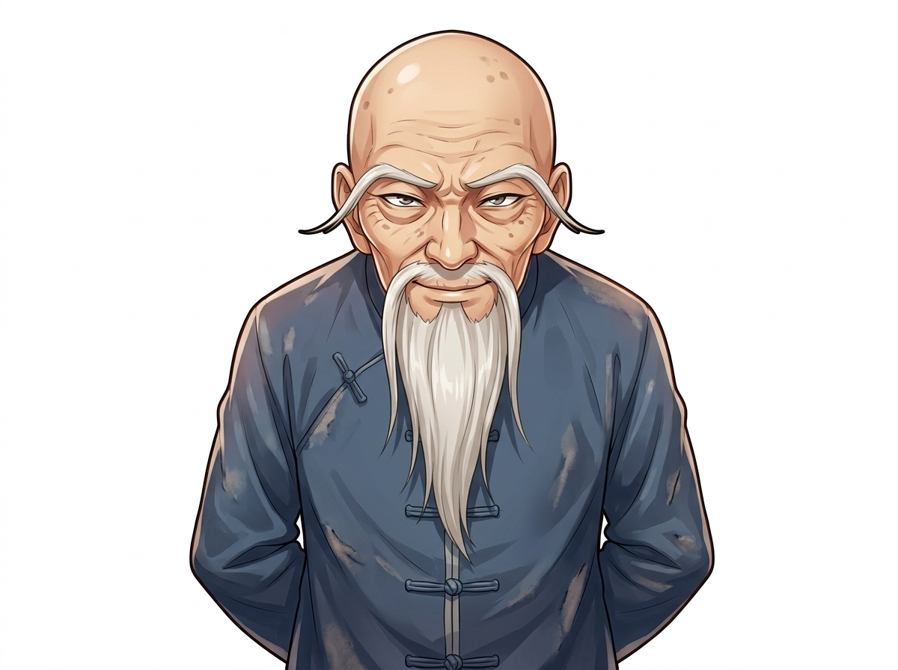
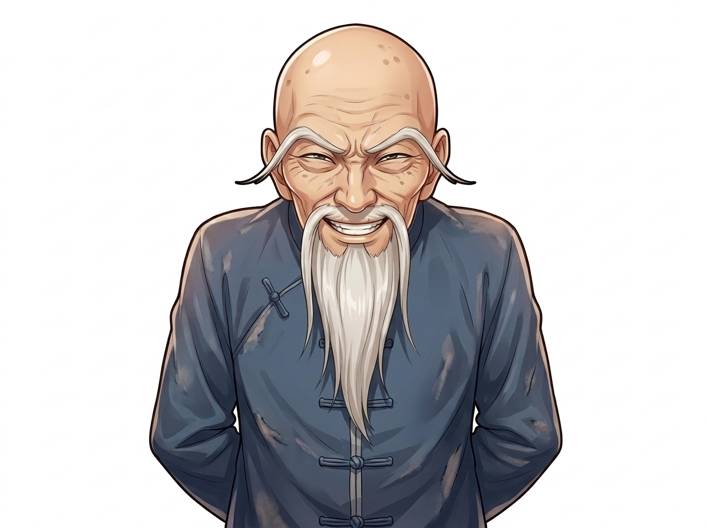

Edit the reference image. Keep the same character exactly the same (face, hairstyle, outfit, body, framing, art style, plain white background). Only change the following: his expression: a creepy cackling laugh ('hehehe'), eyes narrowed to slits, wide toothy grin, shoulders shaking.

